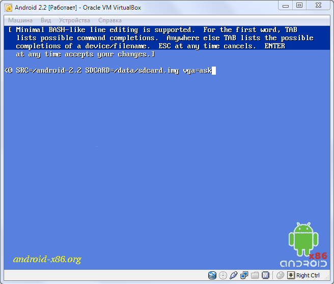
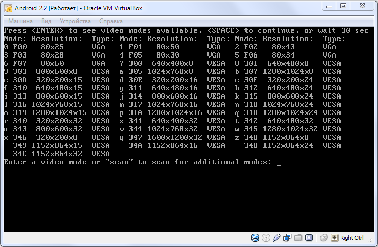
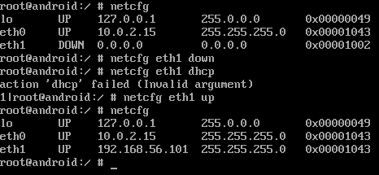
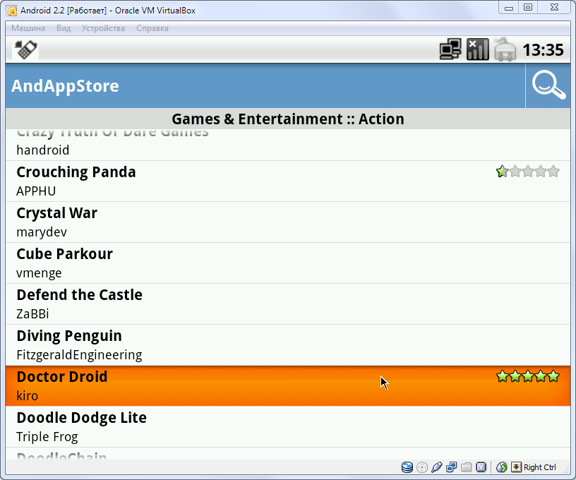

Как запустить мобильные приложения на компьютере? В пакете для разработчика Android есть специальный эмулятор, позволяющий пощупать мобильную ОС. Одна проблема — он тормозит. Прямо скажем, сильно тормозит. Но, к счастью, уже довольно давно ведется работа над интересным проектом по портированию платформы Android на платформу PC.
Android-x86
Как известно, исходники Android открыты — такова политика Google. Поэтому у любого желающего в принципе есть возможность взять за основу исходную версию мобильной ОС и начать разработку своей собственной ветки. Многие энтузиасты активно выпускают патчи, реализующие дополнительный функционал, которого нет в оригинальном Android.
Именно так появился проект «patch hosting for android x86 support». Разработчик планировали выпускать патчи для поддержки x86-платформы. Но после нескольких месяцев работы они поняли, что способны на большее, чем просто поставлять патчи. Так появился проект Android-x86 — специальная версия мобильной ОС для запуска на самом обычном компьютере. У Android-x86, как и у Android, есть разные ветки. В качестве тестовой платформы выбран культовый нетбук Eee PC, но фактически не имеет значения, куда ты будешь устанавливать проект. Это может быть как компьютер, так и планшетник или ноутбук (к проверенным устройствам относятся ASUS Eee, Viewsonic Viewpad 10, Dell Inspiron Mini Duo, Samsung Q1U, Viliv S5, Lenovo ThinkPad x61 Tablet). Последний билд даже имеет поддержку Wi-Fi.Параметр vga=ask позволяет вручную выбрать нужный видеорежим
Хакер #157. Деньги на багах в Chrome
Впрочем, если установка Android на ноутбук — это, скорее, баловство, то установка на виртуальную машину может принести вполне ощутимую пользу, особенно тем, кто хочет попробовать свои силы в разработке под Android, так как после установки им будет намного удобнее тестировать приложения (правда, придется мириться с некоторыми ограничениями, например с отсутствием эмуляции акселерометра). Предлагаю перейти к практике.
Отладка через gsdserver
Не могу не отметить, что Android-x86 предлагается с предустановленным GDBserver’ом, который можно найти в /sbin/gdbserver. Таким образом, у нас есть возможность использовать GDB для отладки приложений на удаленной машине. Для этого, опять же, необходимо поднять сеть между виртуальной и хостовой ОС как показано выше и запустить GDBserver:
root@android:/ # gdbserver <VirtualBox ip address>:1234 [исполняемый файл приложения и полный путь к нему]
Можно также воспользоваться опцией "--attach pid", чтобы присоединиться к процессу, который уже запущен. Далее мы можем подключаться к нашей виртуалке с обычной машины. Запускаем GDB:
# gdb
И подключаемся к удаленному серверу:
gdb > target remote <VirtualBox ip address>:1234
Работает!
Установка на виртуалку
Имя: Android.
Операционная система: Linux.
Версия: Other Linux (или Linux 2.6).
Память: 512 Мб.
Жесткий диск: 3 Гб.
В настройках виртуальной машины нужно прописать загруженный нами образ Android-x86 в качестве DVD-привода. После этого виртуалку можно запускать.
В общем-то, на данном этапе мы достигли поставленной цели — загрузили Android на обычном компе. Для тех, кто любит ставить всё самое последнее, скажу, что версия 4.0 имеет статус devel, так что в ней могут присутствовать различные недоработки. Например, почему-то одновременно показываются графическая оболочка и консоль. Не знаю, баг это или фича, но работать в такой ОС очень неудобно. Образ 3.2RC2 хорош всем, кроме того, что в нем отсутствует поддержка Ethernet, которая была мне нужна для отладки приложений. Но если цель всей затеи — просто поиграться с Android, то смело можешь выбирать его. Я же остановился на ветке 2.2.
Настройка звука и видео
Звук. После установки Android-x86 звук очень часто перестает работать. Я тоже обнаружил эту проблему, когда зашел на Youtube посмотреть ролики. К счастью, всё оказалось не так страшно, и замена звуковой карты в настройках виртуальной машины на «Intel HD Audio» позволила устранить сбой. Если же простое решение не помогает, на официальном сайте выложен FAQ, где описано, как заставить работать ICH AC97 под VirtualBox.
Видео. Операционная система Android ориентирована на широкий круг девайсов, от смартфонов до наручных часов. Очевидно, что устройства имеют разные размеры и, соответственно, разные размеры экрана, поэтому было бы здорово протестировать разрабатываемое приложение при разных разрешениях. Сделать это совсем несложно. Во время запуска виртуальной машины надо дождаться, пока GRUB предложит варианты загрузки ОС, и выбрать в меню пункт «Android-x86 2.2 (HDPI)». Далее нажимаем «e» для редактирования записи. Появится еще одно меню, в котором следует выбрать запись вида «kernel /android-2.2/kernel /quiet root ....». Опять нажимаем «e» и в конце строки через пробел дописываем «vga=ask». Нажимаем Enter для сохранения и «b» для загрузки. После этого на экран будут выведены все доступные видеорежимы, останется только выбрать нужный и ввести его номер. Например, режим 1152х864х32 VESA обозначен как 34С. Список доступных видеорежимов
Инсталлим приложения
Итак, система работает — что дальше? Стандартный набор приложений, поставляемый вместе с ОС, быстро приедается. Да и разве мы ради того поднимали Android-x86, чтобы оказаться зажатыми в каких-то рамках? К сожалению, Android-x86 не может использовать Android Market — эта опция доступна только для тех производителей железа, которые имеют лицензию Google. Поэтому новые приложения установить не так просто, как в Android-телефонах. Тем не менее разработчики Android-x86 постарались максимально упростить процесс установки сторонних приложений:
Чтобы еще больше упростить поиск приложений, можно воспользоваться утилитой AndAppStore, которая поставляется вместе с Android-x86. Это своего рода аналог Android Market: весь софт здесь разбит на категории, а любая программа устанавливается в два клика.
Если нужны только приложения
Специально на тот случай, если нужно запустить только Android-приложения (скажем, популярные игрушки), создан во многом уникальный проект Bluestacks, разработка которого ведется совместно с компанией AMD. Идея в том, чтобы не эмулировать ОС Android, а полностью воссоздать окружение мобильной ОС для нативного выполнения программ. Что это дает? Ты можешь запускать игры в полноэкранном режиме, и они реально не будут тормозить. Платформа позволяет запускать десять приложений, которые идут в комплекте с ней, а также устанавливать дополнительные. Это делается очень просто. Заходим в папку с установленной программой, находим файл HD-ApkHandler.exe и создаем для него ярлык на рабочем столе. Далее скачиваем интересующее нас приложение для Android (в виде apk-пакета) и перетаскиваем его на только что созданный ярлык. Всё, программа установлена — ее можно запускать. Некоторые приложения, правда, не установятся из-за проблем с совместимостью. Некоторые другие, например Angry Birds и Fruit Ninja, помечены компанией BlueStacks как «премиум-приложения», которые можно будет установить только при использовании грядущей платной версии программы. Однако куча других игр установится и запустится без проблем. Настраиваем локальную сеть в Android
Настройки для отладки
Итак, мы установили ось, поигрались с интерфейсом Android, заинсталлили программы, которые хотели посмотреть, — пора переходить к более серьезным занятиям. Я изначально собирался использовать такую систему как платформу для тестирования разрабатываемых приложений, поэтому расскажу, как это делается.
Первым делом нам понадобится настроить сеть, причем в нашем случае она не совсем стандартная. Android-система должна иметь доступ в интернет (что просто необходимо при написании сетевых приложений), а также еще одно подключение к локальной сети, через которое мы могли бы связаться с нашей виртуальной машиной для отладки приложений. Ethernet нужен, чтобы настроить NAT в виртуальной машине и полноценно пользоваться интернетом.
Итак, открываем раздел «Сеть» и настраиваем там два адаптера:
Адаптер 1 — NAT (в виртуальной машине будет виден как eth0, для интернета).
Адаптер 2 — виртуальный адаптер хоста (в виртуальной машине будет виден как eth1, для отладки приложений).
Для продолжения требуется ребут системы. По умолчанию Android x86 не может работать с двумя сетевыми адаптерами, но это легко исправить. Идем в меню для запуска приложений, переходим в «Settings -> Configure Ethernet» и выбираем «eth0 dhcp», после чего снова перезагружаем виртуалку. После загрузки необходимо перейти в консоль. Делается это очень просто, с помощью комбинации Alt + F1...F6 (Alt + F7 вернет нас в графический интерфейс). В консоли необходимо выполнить следующие команды:
root@android:/ # netcfg
lo UP 127.0.0.1 255.0.0.0 0x00000049
eth0 UP 10.0.2.15 255.255.255.0 0x00001043
eth1 DOWN 0.0.0.0 0.0.0.0 0x00001002
root@android:/ # netcfg eth1 down
root@android:/ # netcfg eth1 dhcp
action 'dhcp' failed (invalid argument)
root@android:/ # netcfg eth1 up
root@android:/ # netcfg
lo UP 127.0.0.1 255.0.0.0 0x00000049
eth0 UP 10.0.2.15 255.255.255.0 0x00001043
eth1 UP 192.168.56.101 255.255.255.0 0x00001043
Теперь, как ты видишь, у нас подняты два интерфейса: один для выхода в Сеть, другой для отладки приложений. Остается только настроить последнюю.
Shortcut’ы для быстрой навигации
Отладка приложений
Для дальнейших действий нам понадобится Android SDK который придется загрузить.
с:\android-sdk-windows\platform-tools>adb connect 192.168.56.101
connected to 192.168.56.101:5555
После этого можно просмотреть список уже подключенных устройств, набрав команду:
с:\android-sdk-windows\platform-tools>adb devices
List of devices attached
emulator-5554 device
192.168.56.101:5555 device
Здесь emulator-5554 — дефолтный эмулятор от Google, а 192.168.56.101:5555 — наша виртуальная машина.
Установка приложений с помощью AndAppStore
WWW
Более подробную информацию об утилите ADB и всех ее параметрах ты можешь посмотреть на официальном сайте.
Заключение
Что я могу сказать после месяца использования Android-x86? С одной стороны, проект еще немного сыроват и некоторые недоработки заметны невооруженным взглядом. Версия 4.0 удивила своим интерфейсом, в котором консоль торчала поверх графики. Версия 3.2 на первый взгляд не имела глюков в плане графики, но не позволяла поднять сеть для отладки приложений. И только 2.2 удовлетворила всем моим требованиям. С отладкой тоже всё непросто: этот способ однозначно быстрее эмулятора SDK, но полноценно отлаживать приложения лучше всё-таки на настоящем девайсе. С другой стороны, это шикарная возможность запустить Android на своем компе и понять все его достоинства и недостатки, протестировать популярные приложения, не покупая телефонов и прочих девайсов.